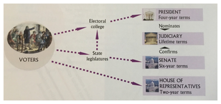
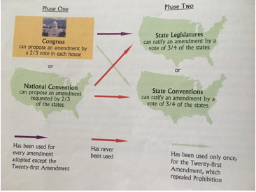

Chapter 2: The
Constitution
1.
The
Origins of the Constitution
a.
The
Road to Revolution
i.
Britain
began tight enforcement of tax and trade regulations
ii.
Colonists
lacked direct representation
iii.
Boycotted
the British by throwing 342 chest of tea into Boston Harbor
iv.
British
sent a navy blockade to the harbor
v.
Colonists
formed the First Continental Congress in September 1774
b.
Declaring
Independence
i.
Thomas
Paine distributed Common Sense which
encouraged the colonists to declare independence from Britain.
ii.
July
4th 1776 the Congress adopted the Declaration of Independence
iii.
The
Declaration is both a statement of philosophy and call to arms
c.
The
English Heritage: The Power of Ideas
i.
John
Locke was a major influence for the colonists
ii.
Locke
believed in natural rights
1.
Natural
Rights – rights inherent in human beings, not dependent on governments
iii.
Locke
believed government should be built on the consent of the governed
iv.
Locke
believed in a limited government with restrictions on power
v.
Locke’s
phrase “life, liberty, and property” was altered to “life, liberty, and the
pursuit of happiness” by Jefferson.
d.
The
American Creed
i.
All
people have natural rights that are guaranteed by the government
ii.
“self-evident”
iii.
First
government to be based on these citizen focused rights
e.
Winning
Independence
i.
In
1775 the British has 8,500 men and 30,000 mercenaries.
ii.
Colonist
had 5,000 men in uniform
iii.
Colonists
won.
f.
The
“Conservative” Revolution
i.
The
Revolution didn’t juristically change the colonist’s way of life, it just
ensured its survival.
2.
The
Government that Failed: 1776-1787
a.
The
Articles of Confederation
i.
The
first constitution of the Untied States, adopted by Congress in 1777 and
enacted in 1781. The articles established a national legislature, the
Continental Congress, but most authority rested with the state legislatures.
ii.
Weak
and ineffective government
iii.
States
held all of the power
b.
Changes
in the States
i.
Now,
the common folk held more power
ii.
Not
just the wealthy merchants and landowners that made the moves before the
revolution
iii.
The
structures of state governments became more responsive to the people.
c.
Economic
Turmoil
i.
Postwar
depression left many farmers unable to pay their debts
ii.
States
threatened foreclosure
iii.
Daniel
Shays started the Shays’ Rebellion
iv.
Shays
attacked courthouses to prevent judges from foreclosing on farms.
v.
No
state could form a militia strong enough to take out the rebellion so the elite
chipped in and took them out.
vi.
This
movement fueled the dissatisfaction with the Articles of Confederation.
d.
The
Aborted Annapolis Meeting
i.
September
1786, leaders met in Annapolis to discuss problems with the Articles of
Confederation
ii.
Only
5 states were represented
iii.
Decided
a larger meeting would need to take place
iv.
In
May 1787 the Constitutional Convention took place in Philadelphia
3.
Making
A Constitution: The Philadelphia Convention
a.
Gentlemen
in Philadelphia
i.
55
men included elite group of economic and political nobles.
ii.
Wealthy
college educated males
iii.
Most
were from urban costal region
b.
Philosophy
in Action
i.
Human
Nature
1.
Leviathan
by Thomas Hobbes
2.
Hobbes
argued that humans are in a constant state of war
3.
The
colonists agreed with Hobbes cynical view of the people.
4.
Government
should play a key role in containing the natural self-interest of people
ii.
Political
Conflict
1.
“The
distribution of wealth is the source of political conflict”
2.
There
are two types: those who hold property and those who do not
3.
Factions
began to arise; we know them today as political parties
iii.
Objects
of Government
1.
Morris
believed that governments main objective was about preservation of property
2.
Government
should enable individuals to acquire and hold wealth
3.
Few,
like Morris, were set on not giving non-property owners the right to vote
iv.
Nature
of Government
1.
Power
should be set against power so no faction could become too strong
2.
“balanced”
government is a good government
3.
limited
government would have checks on its power
4.
no
faction could seize the entire government and tyranny would be avoided
4.
Critical
Issues at the Convention
a.
The
Equality Issue
i.
Conflicts
arose surrounding states votes, slavery, and equal representation
ii.
Equality
and Representation of the States
1.
New
Jersey Plan
a.
Each
state is represented in the congress
2.
Virginia
Plan
a.
States
would be given representation based on their populations
3.
Connecticut
Compromise
a.
Two
houses
b.
Senate
gets 2 members from each state
c.
House
of Representatives gets representation based on the population
4.
Small
states ended up having proportionally more power over larger states
a.
Wyoming
has same amount of representation in the senate as California does
iii.
Slavery
1.
Slavery
was not forbidden by the convention
2.
Too
much conflict between northern states and southern states that required it for
their economy
3.
Argued
over representation of slaves
4.
3/5
Compromise
a.
1
slave counts towards states population as 3/5 of a person
iv.
Equality
in Voting
1.
Franklin
suggested universal manhood suffrage
2.
Some
wanted property owner ship to be a requirement for voting
3.
This
was left to a state issue
b.
The
Economic Issues
i.
Wanted
to address the following problems
1.
States
had erected tariffs against products from other states
2.
Paper
money was worthless in some states
3.
Congress
was having trouble raising money because the economy was in a recession
ii.
Framers
wanted to create a stronger economy
iii.
Government
could raise money though taxing or borrowing
iv.
Constitution
obligated the new government to pay all public debts caused by the Continental
Congress and the Articles of Confederation
c.
The
Individual Rights Issues
i.
Creating
a system that preserved individual rights was a key goal in the creation of the
Constitution
ii.
Believed
that states were doing enough to protect individual rights therefore the
constitution says little about personal freedoms
iii.
Mentions
1.
Writ
of habeas corpus
a.
A
court order requiring jailers to explain to a judge why they are holding a
prisoner custody
2.
Prohibits
bills of attainder
3.
Prohibits
states from passing ex post facto laws which puts statue of limitation on
crimes
4.
Prohibits
religious affiliation from being a determinate in holding public office
5.
Defines
treason
6.
Trial
by jury
5.
The
Madisonian System
a.
Thwarting
Tyranny of the Majority
i.
Madison
was not a good orator or wealthy. He was a careful student of politics and
government.
ii.
Madison
wanted to protect the tyranny of the majority so he proposed the following:
1.
Place
as much of the government as possible beyond the direct control of the majority
2.
Separate
the powers of different institutions
3.
Construct
a system of checks and balances
iii.
Limiting
Majority Control
1.
Madison
placed only one part of the government in control of the majority, the House of
Representatives
2.
Limited
terms for senators to six years, House of Representatives has 2 year terms
because of their direct relationship to the majority.
iv.
Separating
Powers
1.
Created
the three branches of government
2.
Gave
president, congress, and the courts independent elements of power that need to
work together to get things done.
3.

v.
Creating
Checks and Balances
1.
Checks
and balances
a.
Features
of the Constitution that limit governments’ power by requiring that power be
balanced among the different governmental institutions. These institutions
continually constrain one another’s activities.
2.
Establishing
a Federal System
a.
Power
was divided between national and state governments
b.
This
gave an additional check on the national government
b.
The
Constitutional Republic
i.
Country
was too large for a direct democracy
ii.
Erected
a republic
1.
Republic:
a form of government in which the people select representatives to govern them
and make laws
c.
The
End of the Beginning
i.
The
constitution was completed on the 109th day of meetings in
Philadelphia.
6.
Ratifying
the Constitution
a.
Constitution
broke the Articles of Confederation by allowing it to pass with only 9 states
out of 13. The AOC would have required a unanimous consent
b.
Federalist
and Anti-Federalist
i.
Federalists
1.
Supporters
of the US Constitution at the time that states were contemplating its adoption
ii.
Anti-Federalists
1.
Opponents
of the American Constitution at the time when states were contemplating its
adoption
2.
Believed
this new document was en enemy of freedom and took away the very freedom they
just fought to protect
3.
Said
that new document would erode fundamental liberties
4.
Complained
about no rights being listed in the Constitution
5.
Federalists
added the Bill of Rights
iii.
Bill
of Rights
1.
The
first 10 amendments to the US Constitution drafted in response to some of the
Anti-Federalist concerns. These amendments define such basic liberties as
freedom of religion, speech, and press and guarantee defendants’ rights.
c.
Ratification
i.
Federalists
had bigger political outreach
ii.
Delaware
was the first to approve of the Constitution
iii.
NYC
was the nations first capital
7.
Changing
the Constitution
a.
The
Formal Amending Process
i.
The
most explicit way of changing the constitution is through the formal process of
an amendment.
ii.

iii.
Equal
Rights Amendment was proposed by not ratified
1.
Blocked
because southern states opposed it.
b.
The
Informal Process of Constitutional Change
i.
Judicial
Interpretation
1.
Marbury
v Madison
a.
Gave
the Supreme Court the power of Judicial Review
i.
The
power of the courts to determine whether acts of congress and, by implication,
the executive are in accord with the US vs
constitution.
2.
Changing
Political Practice
a.
Toady
we have political parties, and have changed the constitution to support the
modern style of presidential elections.
3.
Increasing
Demands on Policymaking
a.
The significance of the president has
grown since the creation of the constitution.
b.
President’s
now are much more involved in international affairs.
c.
All
wars increase presidential power because they place additional demands on the
commander in chief.
d.
Patriot
Act gave the executive branch unprecedented power.
ii.
The
Importance of Flexibility
1.
The
constitution is a document of less than 8,000 words. There are not rules for
everything, it is just a framework.
2.
Therefore,
it is adaptable in its interpretation
3.
The
Constitution is still growing.
8.
Understanding
the Constitution
a.
The
Constitution and Democracy
i.
Constitution
established a government that permitted substantial movement toward democracy
ii.
15th
amendment
1.
prohibited
discrimination on the basis of race in determining voter eligibility
iii.
19th
amendment
1.
gave
women the right to vote
iv.
23rd
amendment
1.
residents
of DC are permitted to vote in presidential elections
v.
24th
amendment
1.
prohibited
poll taxes
vi.
26th
amendment
1.
lowered
the voting age to 18
b.
The
Constitution and the Scope of Government
i.
The
Constitution limits governmental action
ii.
This
creates more protection for liberty and opens the system to much more
participants